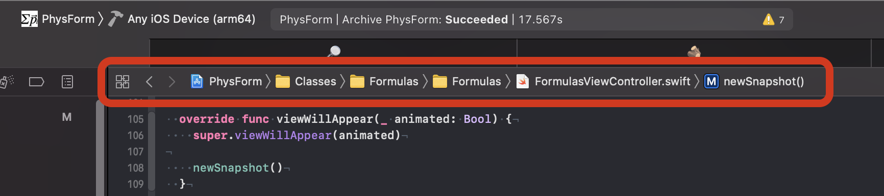
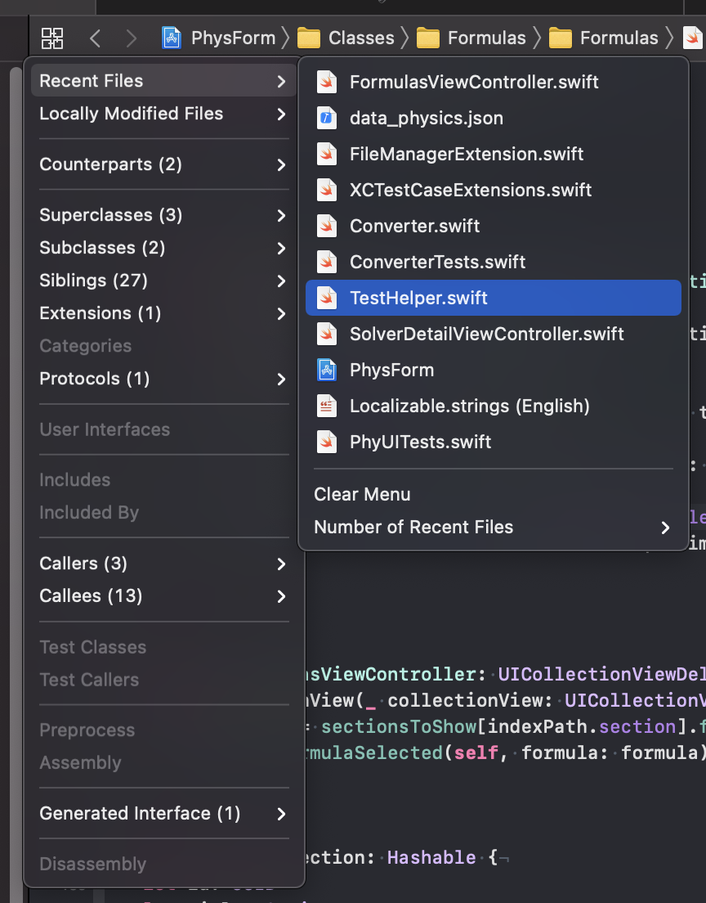
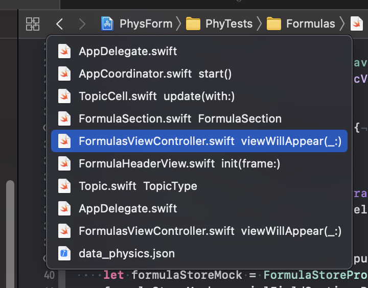
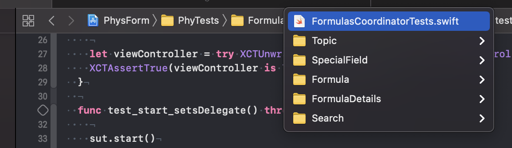
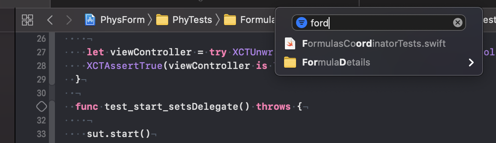
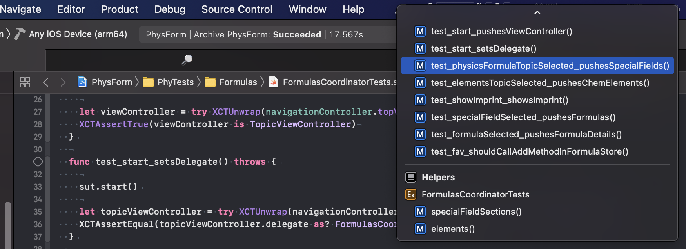

The Jump Bar In Xcode
You are using the jump bar all the time when working with Xcode. In case you wonder what I mean with jump bar, it’s this:
The jump bar hosts many useful features. Let’s work through the most important features from left to right.
Related Items (Shortcut: ⌃1)
On the left is a button with four adjacent squares. This button shows the related items for the current context. The first two items are more general: Recent Files and Locally Modified Files.
The rest of the items in the list are in the context of the file, type or method the cursor is located in. For example, I use ‘Callers’ on a daily bases to find call sites of a method I’m working on.
Editing History (Shortcut: ⌃2)
You probably already know that you can can move back and forward in the files history (the files last open in the code editor) with the shortcut ⌃⌘← and ⌃⌘→ or by clicking the arrows on the left side of the jump bar. But there is more. With the shortcut ⌃2 or by long-clicking the left arrow you can access the history of the files you have edited.
This makes navigating between files you edit regularly in an editing session quite easy.
Group Items (Shortcut: ⌃5)
In some (most?) projects the files are more or less meaningful grouped in the project navigator. With the shortcut ⌃5 Xcode shows a menu of the current group.
When you start typing while this menu is open, Xcode filters the items using fuzzy search. This means when you type ‘ford’ the menu shows the elements ‘FormulasCoordinatorTests.swift’ and ‘FormulaDetail’.
File Items (Shortcut: ⌃6)
The shortcut ⌃6 shows all items (types, properties, methods, protocols) in the current file.
Again you can filter the shown items using fuzzy search by starting to typ what you are looking for. And you can use the arrow keys and return to jump to that item.
Conclusion
Mastering the jump bar (especially using the shortcuts) lets you navigate quickly to the relevant parts of the current editing session. Try it.
Follow me on Twitter for more content about iOS development.